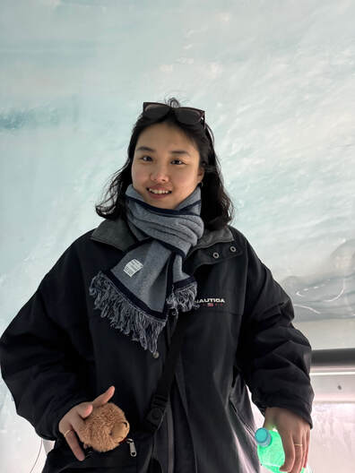

I'm a Ph.D. candidate advised by Min-Shik Kim at Yonsei University.
My research focuses on working memory and attention, particularly on their interaction. My work extends to the structure, dynamics, and functional states of memory representations and their role in guiding attention and behavior.
I am expected to complete my Ph.D. in February 2027 and am currently seeking postdoctoral positions.
Beyond research, I like sports, especially as a fan of Boston Celtics and Oracle Red Bull Racing.
My research focuses on working memory and attention, particularly on their interaction. My work extends to the structure, dynamics, and functional states of memory representations and their role in guiding attention and behavior.
I am expected to complete my Ph.D. in February 2027 and am currently seeking postdoctoral positions.
Beyond research, I like sports, especially as a fan of Boston Celtics and Oracle Red Bull Racing.

EDUCATION
2021 - Yonsei University (Cognitive Psychology, PI: Min-Shik Kim)
2017 - 2021 B.A., Yonsei University (Psychology)
2021 - Yonsei University (Cognitive Psychology, PI: Min-Shik Kim)
2017 - 2021 B.A., Yonsei University (Psychology)
Funding
2024-2026 PhD Fellowship Program, National Research Foundation of Korea
(Title: Development of Attention-based Working Memory Training Paradigm for Super-aged Society)
2023-2025 Yonsei University Research Grant
(Title: The role of spatial attention in visual working memory: Focusing on feature binding)
2024-2026 PhD Fellowship Program, National Research Foundation of Korea
(Title: Development of Attention-based Working Memory Training Paradigm for Super-aged Society)
2023-2025 Yonsei University Research Grant
(Title: The role of spatial attention in visual working memory: Focusing on feature binding)
Cognition Lab, Department of Psychology, Yonsei University
50 Yonsei-ro, Seodaemun-gu, Seoul, 03722, Republic of Korea
(+82) 2-2123-4228 (Office)
Yonsei Cognition Lab: http://cognition.yonsei.ac.kr/
Contact: juyeon.joe@gmail.com
juy1317@yonsei.ac.kr